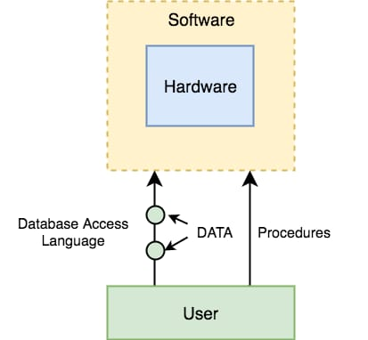

types of database
Links:

1-Text database:
When data is organized in a text file in rows and columns, it can be used to store, organize, protect, and retrieve data.
2-Desktop database programs:
are another type of database that's more complex than a text database but intended for a single user. A Microsoft Excel spreadsheet or Microsoft Access are good examples of desktop database programs. These programs allow users to enter data, store it, protect it, and retrieve it when needed. The benefit of desktop database programs over text databases is the speed of changing data, and the ability to store large amounts of data while keeping performance of the system manageable.
3-Relational databases: are the most common database systems. They include databases like SQL Server, Oracle Database, Sybase, Informix, and MySQL. The relational database management systems (RDMS) feature much better performance for managing data over desktop database programs.
4-Normalization:
is a database business process to break up data into the smallest possible parts. Instead of storing first and last name in one bucket, or field, normalization requires that you store the first name separately from the last name. This is helpful if you want to sort the data by last name or by first name. RDBMS systems require that data is normalized.